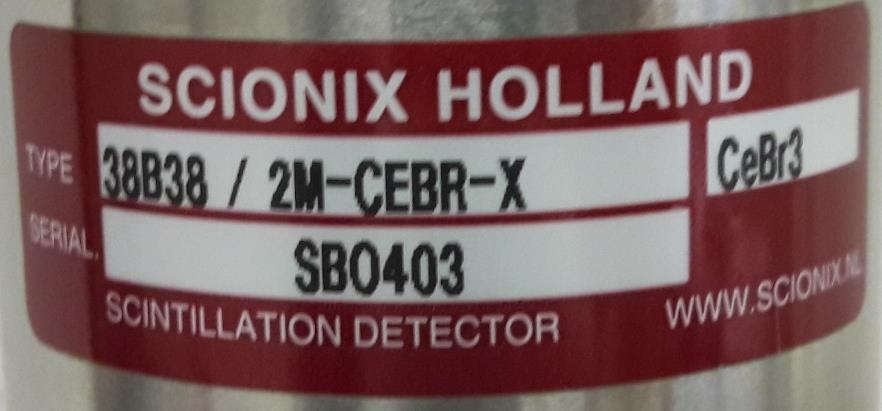

A detector ordered from a catalog is a configuration: a specific scintillator, in a specific size and shape, mounted in a specific housing, coupled to a specific photodetector, with specific options. The configuration nomenclature lets the engineer specifying the detector and the engineer building it agree on what is being ordered. This chapter is the reference for the Scionix configuration nomenclature carried through the rest of the book.
A fully custom detector built once for one application can be specified on a drawing. A catalog detector ordered hundreds of times needs a structured part number that compresses the configuration into a few characters. The Scionix nomenclature, used throughout this book, encodes nine attributes:
A typical part number might read: B-51S-3-5410-NaI/2, which decoded reads: B-style crystal housing, 51 mm diameter, 51 mm length, 3-inch PMT, Hamamatsu R5410 tube, NaI(Tl) crystal, voltage divider option 2.
The full encoding is in Section 10.2 below. The point of this chapter is not to memorize the codes but to know that a structured nomenclature exists and where to look it up.
The Scionix part number reads left to right.

Field 1: Crystal style code. A letter or letter-pair indicating the housing geometry.
| Code | Geometry |
|---|---|
| A | Demountable PMT, separate crystal-housing and PMT |
| B | Standard PMT integrated, side viewing |
| BA | B-style with thin entrance window for X-ray work |
| BD | B-style with built-in voltage divider |
| BM | B-style with magnetic shield |
| C | Crystal only, no PMT |
| CA | C-style with thin window |
| CD | C-style with built-in divider preamp |
| D | Crystal with photodiode readout |
| S | Crystal with SiPM array readout |
| SA | S-style with thin window |
| SP | S-style for specific custom configurations |
Field 2: Crystal diameter. Millimeters. For square crystals, the side length is given (with a square indicator symbol on drawings).
Field 3: Crystal height or length. Millimeters. For wells, the well dimensions are appended in parentheses.
Field 4: Light detector size. Inches diameter for round PMTs and SiPM modules. For arrays, the format is "N x size" (e.g., 4x16mm for a 4-die SiPM array of 16 mm modules).
Field 5: Quantity of light detectors. Default 1. For dual-end readout (long bars, large crystals), 2.
Field 6: PMT or SiPM type and features. Manufacturer plus model number (Hamamatsu R5410, ETL 9266, etc.) for PMTs. SiPM family code for SiPM arrays (HD-NUV, HD-RGB, etc.).
Field 7: Scintillation material. Standard chemical formula plus activator. NaI(Tl), CsI(Tl), LaBr3:Ce, GAGG:Ce, CLLBC, etc.
Field 8: Extra features. Optional codes:
| Code | Feature |
|---|---|
| /M | Mu-metal magnetic shield |
| /T | Temperature stabilization |
| /L | Built-in LED pulser |
| /A | Built-in Am-241 alpha pulser |
| /LBG | Low-background construction |
| /Q | Quartz window |
| /TW | Thin window |
| /HV | Built-in HV supply |
| /D | Built-in digital pulse processor |
Field 9: Voltage divider style. Numeric code referring to a specific divider design (1, 2, 3, etc.) tied to particular tube types and performance optimizations.
A few examples to make the encoding concrete.
Example 1: Handheld gamma spectrometer.
Part number: S-25S-25-12mm-HD-RGB-CsI:Tl/A/D
Decoded: S-style (SiPM-coupled crystal), 25 mm diameter, 25 mm length, 12 mm SiPM array, HD-RGB SiPM family, CsI(Tl) scintillator, with built-in Am-241 alpha pulser and built-in digital pulse processor. This is a typical compact spectrometer for portable instruments.
Example 2: Down-hole well-logging probe.
Part number: BD-25S-100-2-9266B-CsI:Na/T/HV
Decoded: BD-style (B-style with built-in divider), 25 mm diameter, 100 mm length, 2-inch PMT, ETL 9266B (high-temperature tube), CsI(Na) scintillator, with temperature stabilization and built-in HV supply. Suitable for the 175 C operating environment described in Chapter 8.
Example 3: Low-background environmental counter.
Part number: B-76S-76-3-R6231-NaI:Tl/M/LBG/A
Decoded: B-style, 76 mm diameter, 76 mm length, 3-inch PMT, Hamamatsu R6231 (low-background tube), NaI(Tl), with mu-metal shield, low-background construction, and Am-241 pulser. The standard 3-inch by 3-inch low-background gamma counter.
Example 4: TOF-PET module.
Part number: S-array-4mm-20mm-12x12-HD-NUV-LYSO:Ce/D
Decoded: S-style array, 4 mm by 4 mm by 20 mm pixels, 12x12 array, HD-NUV digital SiPM family, LYSO:Ce scintillator, with built-in digital pulse processor. The standard PET ring module.
Example 5: Dual gamma-neutron handheld.
Part number: S-32S-32-15mm-HD-NUV-CLLBC/A/D
Decoded: S-style, 32 mm diameter, 32 mm length, 15 mm SiPM, HD-NUV array, CLLBC scintillator, with Am-241 pulser and digital pulse processor (which performs the pulse-shape discrimination for n-gamma separation).
Most production detectors fit catalog designations. Custom configurations get extended part numbers with appended descriptors. The customer requirements document and the manufacturing drawing carry the full specification; the part number is a shorthand for filing, ordering, and tracking.
For one-off detectors with no catalog equivalent, a project-specific designator (often "SP-" prefix followed by a project code) is assigned. The Scionix history of custom designs runs into the thousands of unique configurations, and the ability to specify a part number that compresses the right information is what allows the catalog to scale.
BNC in Practice - Always quote the full part number, never just the crystal
A customer who asks for "a 3-inch by 3-inch NaI(Tl) detector" has not specified the deliverable. The same crystal in three different housings, with three different PMTs, with three different divider designs, is three different products with three different prices, three different lead times, and three different operating envelopes. The discipline that prevents misunderstanding is to confirm the full part number in writing before quoting. Five minutes of disambiguation prevents weeks of remake work. Customers who know detectors expect this discipline. Customers who do not know detectors will appreciate that you walked them through it.
Two things never fit in a part number and always have to be specified separately: the calibration certificate (each detector ships with measured energy resolution, peak position, count rate at a stated activity) and the optical surface treatment of the crystal (polished, matte, custom reflector). Both materially affect performance. Both are agreed in writing before manufacturing starts.
The part number is a label. The complete agreement is the manufacturing drawing plus the calibration specification plus the test record. The next chapter is about what goes into those three documents.
Take it interactively. The quiz lives on its own page. Pick one answer per question, then check your score. Auto-scored, and your answers are saved on this device. About 10 minutes.
Or read the questions and answers inline below (preserved for print and offline use).
[1] Scionix Holland B.V., "Scintillation Detector Catalog," updated 2025.
[2] G. F. Knoll, Radiation Detection and Measurement, 4th ed. Hoboken, NJ: Wiley, 2010.